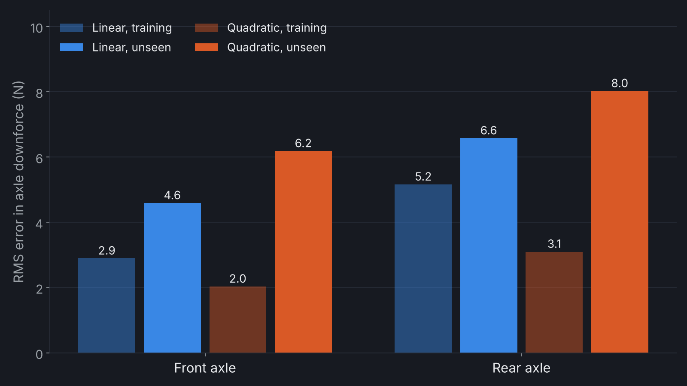

Personal project · Python · October 2026
F1 25 Aero Map Regression
Separating the effects of front and rear ride height on axle downforce, and testing whether the model predicts or just fits.
- 0.9998R² of the front-axle model (rear axle 0.997)
- 4.6 NFront-axle error on points the model never saw, against 6.2 N for a curved model
- 15Controlled test points from coast-down runs at Mexico City in F1 25
- PublicCode, data, tests and results on GitHub
The problem
My F1 25 aero map showed that changing the static ride height at one end of the car also moved the dynamic ride height at the other end. So a simple one-variable sweep mixes two effects. I used a two-variable regression to separate how much downforce each axle gains or loses per millimetre of front and of rear ride height.
Results
| Axle | Per mm front ride height | Per mm rear ride height | R² |
|---|---|---|---|
| Front | −42.46 N | +6.05 N | 0.9998 |
| Rear | −14.15 N | −13.40 N | 0.997 |
Raising the front by 1 mm costs about 42 N of front downforce, while raising the rear by 1 mm adds about 6 N at the front. The rear axle loses about 14 N per mm of ride height at either end.
Testing the model, not just fitting it
A curved (quadratic) model fitted the training data better, so I checked whether it actually predicts better. With leave-one-out cross-validation, each point is predicted by a model that never saw it.

- The quadratic overfits. It does better mid-range but fails at the ends of the test range, so I kept the linear model.
- The rear residuals arch against rear ride height, so the real relationship curves slightly. Fifteen points are not enough to model that curve reliably.
- Cross-checks: the SciPy fit matched Excel's LINEST exactly, and pytest tests check the fitting function recovers known slopes from made-up data.
Next steps
More test points, especially at the ends of the range, laid out as a grid of front and rear ride heights, with repeat runs to measure the noise.
Code
The code, data, tests and results are public: github.com/nkhan24/f1-aeromap-regression.
Tools: Python (NumPy, pandas, SciPy, scikit-learn, Matplotlib, pytest), Git, Excel
← All projects